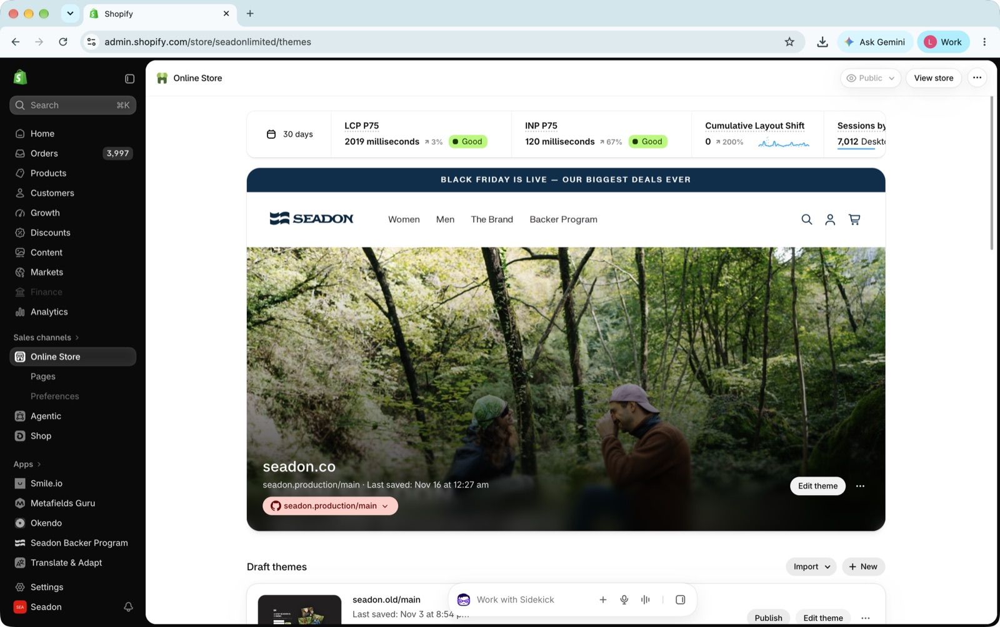
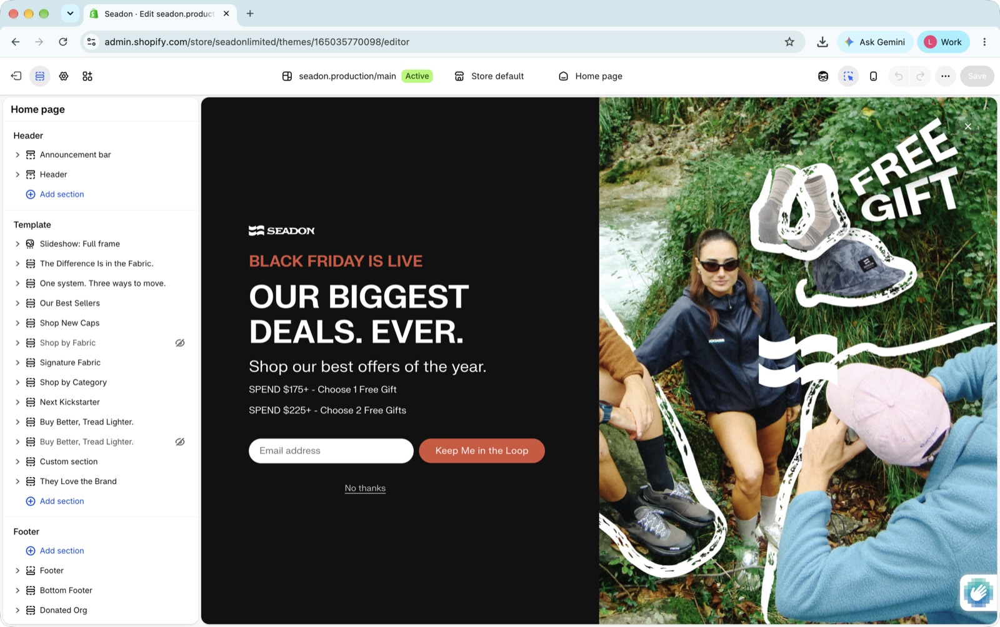
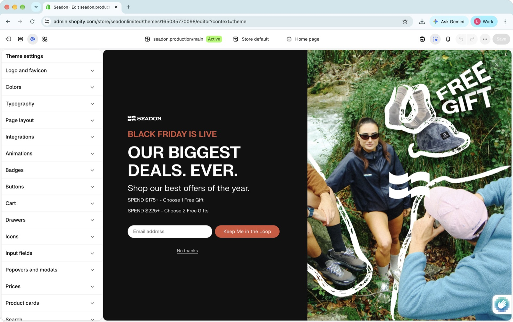
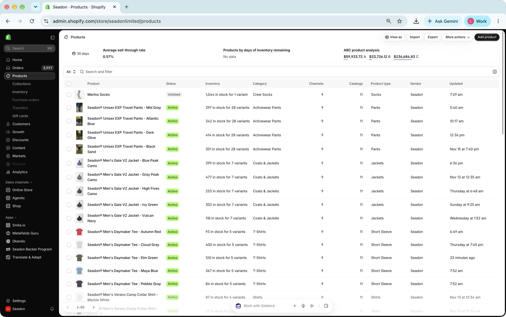
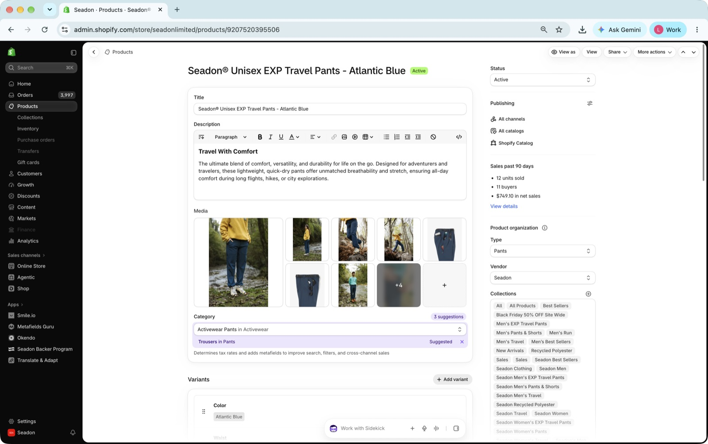
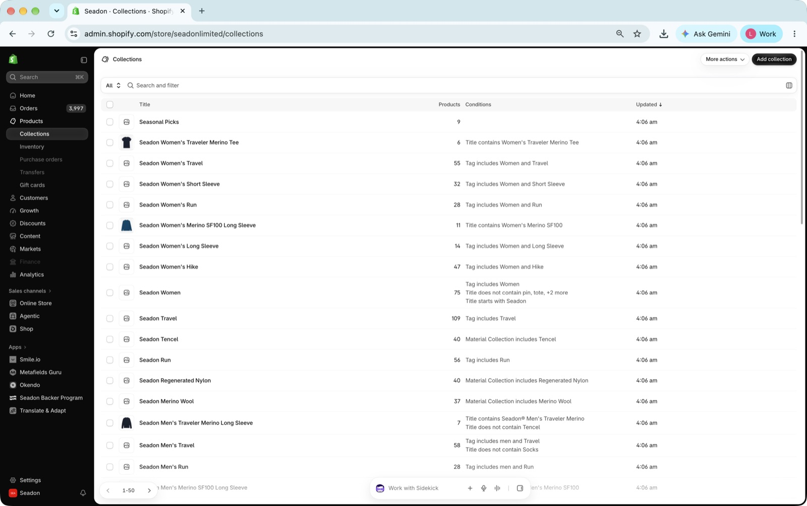
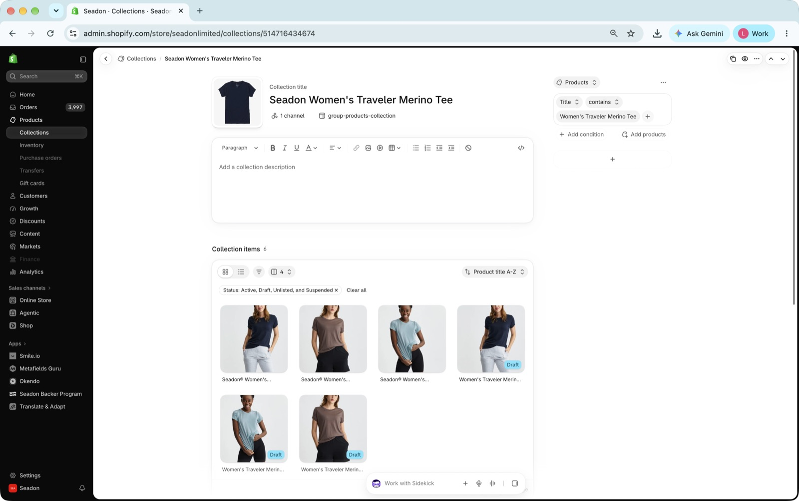
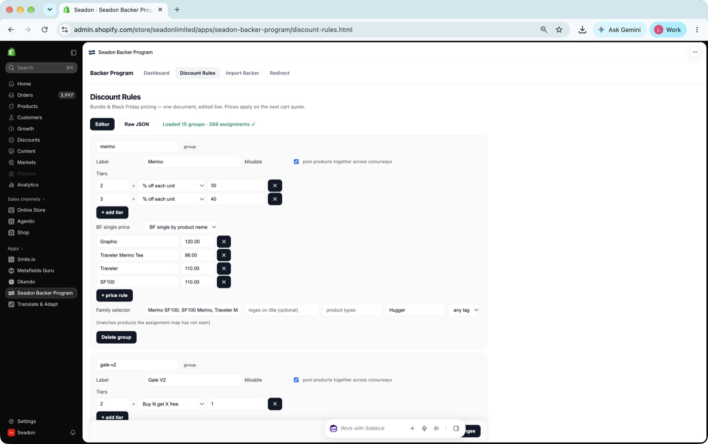
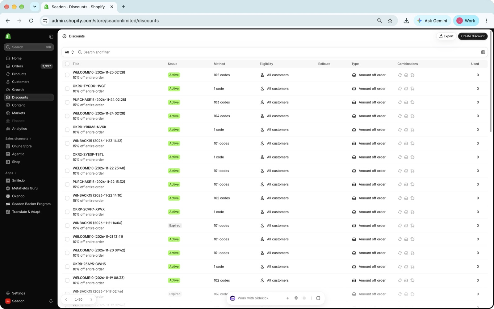
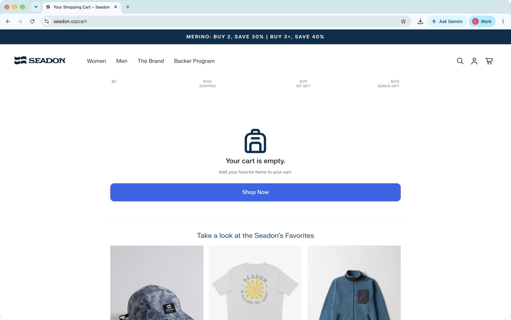

On this page
How to use this page
Each procedure follows the same five parts, in this order. Once you recognise them you can skim to the part you need.
- What this does. One sentence on the result, so you know when you are finished.
- Steps. Numbered, in order. Each step names the exact label you click, and says so when a step has a hidden consequence.
- You should see. The green box: what the screen looks like when the step worked.
- If it did not work. The amber box: the usual causes, and the check that tells them apart.
- How to undo. The shortest route back, before you try to diagnose anything.
Three tags appear next to procedures. verified means the steps were performed and the result read back on 25 November 2026. described means they come from the live screen or the code but were not performed. blocked means someone else must decide or grant something first.
Before you change anything
Open seadon.co in a second browser tab and leave it open. Comparing the storefront with the admin is how you tell a saved change from a preview, and it is the fastest way to notice you are about to publish to the live site.
W0 · Finding your way around the admin
What this does. Takes you from a blank browser tab to the exact screen each procedure starts on. Nothing here changes the store.
| Where you are going | Route from the sidebar | Direct address | Used in |
|---|---|---|---|
| Themes and the theme editor | Online Store → Themes | admin.shopify.com/store/seadonlimited/themes | W1, W2, W7 |
| Products | Products | …/products | W3 |
| Collections | Products → Collections | …/collections | W4 |
| Discount codes | Discounts | …/discounts | W6 |
| Bundle and Black Friday pricing | Apps → Seadon Backer Program → Discount Rules | …/apps/seadon-backer-program | W5 |
| Free gift settings | Online Store → Themes → live theme → Edit theme → Theme settings | Editor link, then the gear icon | W7 |
A direct address is safe to paste into the address bar. It lands on the same screen the sidebar route reaches, and it skips the clicking. Use it once you know which screen you want.
Three habits that save time
Press Command and K to search anything. Press Command and click a link to open it in a new tab, so the list you were reading stays put. Use the browser's back button instead of re-navigating: the admin keeps your filters when you go back.
W1 · Publish a theme change safely
What this does. Changes something in the theme, checks it on a copy, and only then lets customers see it. Every visual change to the storefront goes through this sequence, even a one-word edit.
verified The screens and states here were opened and read on the live store on 25 November 2026. The test step is blocked until the theme's test suite can run: page 3, A3.

seadon.production/main, last saved 16 Nov 2026 at 12:27 am. Draft themes underneath include seadon.old/main, Elevar Test 1, a dev draft from April, and the 2025 Cyber Monday and Christmas themes.What you are looking at
The top card is the live theme. Two things prove it: it has no Draft label, and its card shows a working preview of the storefront. Everything below it is a copy, either a draft somebody made or an older theme kept for rollback.
The performance strip above the cards reports speed for the last 30 days. On 25 November it read LCP 2019 milliseconds, INP 120 milliseconds and layout shift 0, all marked Good. Treat it as a trend line: a jump after a publish is the signal to roll back and look closer.
Steps
- Click Online Store in the sidebar, then Themes. Confirm the live card is the one at the top with no Draft label.
- Open the live card's … menu at its right edge and click Duplicate. A new card appears in the Draft themes list within a few seconds.
- Click Edit theme on the copy, not the live card. The editor opens, and the top bar names the theme you are editing. Read that name once before clicking anything.
- Make the change in the copy. W2 covers section edits, W7 covers gift settings.
- Preview the change on four pages at minimum: the home page, a product page, a collection page and the cart. Use the device toggle in the top bar to check the phone layout for anything with text or images.
- Run the theme test suite on the same code you are publishing. The command and its current state are on page 3, A3. If the suite cannot run, say which pages you checked by hand and record the exception on page 5.
- Back on Online Store → Themes, click Publish on the copy. Shopify asks you to confirm: read the theme name in the confirmation before accepting.
- Keep the old theme as a draft. Do not delete it. That card is your rollback.
- Copy the exact files you changed back into the
seadon.productionrepository and commit them. Git is the source of truth: when the repository and the live theme disagree, the next upload silently reverts the storefront.
You should see
After the publish, the Themes page shows your copy at the top with Public in the header, and the old theme below it with a Draft label. The storefront in your second tab shows the new version after a normal reload.
If it did not work
Nothing changed on the storefront. You published a different theme, or you edited the live theme and never pressed Save. Compare the last-saved time on the live card with the time of your edit.
The site looks broken. Roll back first and diagnose second. Publish the previous theme, which is still in the draft list.
The editor shows an error banner. A section references a file that no longer exists, or the change is invalid. Nothing is published while the banner is up.
How to undo. Online Store → Themes → the … menu on the previous theme → Publish. That reverts every template, section and setting at once, in seconds, and it is the right response to any storefront breakage.
W2 · Homepage changes
What this does. Edits text, images, links and section order on the home page. Changes reach the live theme when you press Save in the editor, so work on the copy from W1 unless the change is trivial and reviewed.

The live home page runs these sections, in order, as read from the editor on 25 November 2026:
- Header group: Announcement bar, Header.
- Template, part 1: Slideshow: Full frame, The Difference in the Fabric, One system. Three ways to move, Our Best Sellers.
- Template, part 2: Shop New Caps, Shop by Fabric (currently hidden), Signature Fabric, Shop by Category, Next Kickstarter, Buy Better Tread Lighter (two instances, one hidden), Custom section, They Love the Brand.
- Footer group: Footer, Bottom Footer, Donated Org, Policies and links.
- Popups: a Background popup, and the Split popup that draws the Black Friday panel.
Changing a line of text
- Open the editor on the theme copy and confirm the selector reads Home page.
- Click the section row in the left list. Its settings appear on the right and the section gains a blue outline in the preview.
- Click the field you want, for example a heading or a body text box. Select all the text with
CommandandAand type the replacement. Type plainly: the theme applies its own capitals and weight. - Press Save in the top bar. The button goes grey once the save lands.
- Reload the storefront tab. The new text appears.
You should see
While typing, the change shows in the preview and the Save button turns dark, meaning something is pending. After Save, the button is grey again and the preview still shows the change.
If it did not work
The field will not accept typing. The block inherits its text from theme settings. Look for a note under the field, or edit the text in Theme settings instead.
The preview updates but the store does not. Save was not pressed, or you are editing a draft theme. Check the theme name in the top bar.
The text runs off the screen on a phone. The field has a practical limit by design: shorten the sentence rather than shrinking the font.
Changing an image
- Open the section and click the image picker. A panel of existing store images appears, with an upload button at the top.
- Choose an existing image where one fits. Upload only when none does, and prefer a wide photo over a tall one: tall images crop badly on phones.
- If the section asks for alt text, describe what the image shows in one short sentence. Screen readers and search engines use it.
- Save, then check the phone preview before you leave.
Adding, hiding or removing a section
Use + Add section inside the group where it belongs. Its position in the left list is its position on the page, and dragging a row reorders it. The eye icon hides a section without deleting it.
Hiding is reversible and deleting is not: a deleted section takes its settings with it. Hide first, wait a week, and delete only if nobody asks for it back.

Two settings that bite
Theme settings apply to every page that uses them, so a colour or price-format change is never local to the page you are previewing. And Custom CSS at the bottom of Theme settings overrides the theme's own styles: before debugging a style problem anywhere else, check whether a rule there is responsible.
W3 · Product page changes
What this does. Edits a product's title, description, photos, price, stock or collection membership. Product data saves directly, with no separate publish step.

Reading the list before you open anything
- Status. Active means customers can buy it. Draft means unfinished and invisible. Unlisted means the page works but is hidden from search and collections.
- Inventory. A number beside a variant count, for example 28 variants. An empty or red value means at least one variant cannot be sold.
- Channels and Catalogs. Nine channels and eleven catalogs is normal here. A product with fewer is usually a draft that has not been published.
Steps
- Click Products and use Search and filter. Search the colour name as well as the style name: each colourway is a separate product.
- Click the product name. The edit page opens.
- Change the title, description or media in the left column. Change status, publishing or organisation in the right column. Nothing saves until you press Save.
- For price or stock, scroll to Variants. Price, SKU, barcode and inventory all belong to the variant, not the product.
- Press Save. The page reloads with your values in place.
- Open the product page on the storefront and check the result, including the variant selector if you changed variants.

You should see
After Save, the product list row shows the new title and a fresh Updated time. On the storefront the product page shows the new text and photos after a normal reload.
If it did not work
The storefront still shows the old description. A channel cache is serving the old copy. Reload with Command, Shift and R and look again.
The price changed but the cart shows the old one. You edited the product, not the variant. Scroll to Variants and check each size.
The product is missing from a collection. The collection is automated and the title no longer matches its rule, or the product is Draft.
Colourways are separate products
The store models each colour as its own product and links the family through the product.color_variant_products metafield. Adding a colour means creating a product and adding the link, not adding an option to an existing product. Getting this wrong splits a family across the pickers and breaks family-aware bundle and gift logic, which is the class of bug behind order #17052.
W4 · Collections
What this does. Controls which products appear together on a page such as Women's Travel or Best Sellers.

Two kinds of collection, and why the difference matters
| Kind | How products get in | What you edit |
|---|---|---|
| Automated | A rule, for example "Title contains Women's Traveler Merino Tee" | The rule. Adding products by hand is pointless: the next evaluation rebuilds the list. |
| Manual | Someone adds each product | The product list itself, with Add products and remove. |
- Open Products → Collections and click the collection.
- Read the condition at the top of the right column. If it names a rule, the collection is automated.
- For an automated collection, edit the condition. For a manual collection, use Add products and remove items individually.
- Check the publish state: the line under the title reports the number of channels. A collection published to no channel is invisible.
- Press Save.
- Open the collection page on the storefront and count the products against the editor's count.

You should see
The product count in the editor matches the number of cards on the storefront page. If the editor says six and the store shows three, the other three are Draft or Unlisted.
If it did not work
The page is short of products. Check the status of the missing items before touching the rule.
A new product is missing from every collection. Its title matches no rule and it was not added by hand. Fix the title or add it to the manual collections.
The collection is empty after an edit. The condition now matches nothing. Use the browser back button if you have not saved, or restore the previous condition and save.
W5 · Bundle pricing
What this does. Sets the price for multi-item bundles and Black Friday single prices. These are not Shopify discounts: they live in one document, and the theme asks the app to price the cart from it.

merino group carries two percent tiers and per-product Black Friday prices; gate-v2 carries a buy-two-get-one-free tier. Raw JSON is the same document without the form.What the pieces mean
| Piece | What it does | What to watch |
|---|---|---|
| Group | A family of products sharing a price ladder, identified by a key such as merino. | Assignments point at the key. Renaming it orphans every assignment that used it. |
| Mixable | Lets colours and products in the group pool toward one quantity threshold. | Tick it only where the offer genuinely mixes items. On a single-product offer it lets two colours count as a pair. |
| Tier | A quantity plus a price rule: percent off each unit, a set price, or buy N get X free. | The threshold means "this many or more", so a three-item tier also prices four and five. |
| BF single price | The price of one unit during the sale, for named products. | These override percent tiers. Left in place after the campaign, they keep selling at the sale price. |
| Family selector | Catches products the assignment map has not seen, by title, tag or product type. | A broad selector pulls in products you did not intend to discount. |
- Open Apps → Seadon Backer Program → Discount Rules.
- Read the status line. It reports how many groups and assignments loaded. A failure to load means the document is malformed and nothing can be priced: stop and restore the last good version.
- Find the group by its identifier, not its label. Labels are for humans; the identifier is what the rest of the system uses.
- Edit the tier. Choose the rule type first, then the number. Percent off each unit, a fixed set price and buy N get X free are not interchangeable: the wrong type applies the discount to the wrong base.
- Press the save button at the bottom of the page. The editor validates on the server, so a malformed document is rejected instead of reaching the cart.
- Verify in a real cart: add the qualifying items on the storefront and read the line prices and the discount row.
You should see
The status line keeps its group and assignment counts after saving. In the cart, the qualifying items show the discounted unit price straight away and the discount row names the offer.
If it did not work
The cart price did not change. The product may not be in the group's assignment map. Watch the assignment count before and after your edit: if it did not move, the tier changed but no products joined.
Every bundle price vanished. The document is invalid or empty. Restore the last good JSON and save again.
The discount is larger than intended. Two plans are priced for each cart and the cheaper one wins, so a legacy per-product price can undercut your new tier.
What not to touch
The BF single price rows override percentage tiers for named products during the sale. A Black Friday unit price left in place after the campaign is the most likely way to sell a product at the sale price for months. Closing the campaign means deleting those rows as well as the announcement bar.
W6 · Discount codes
What this does. Creates and retires discount codes such as WELCOME10. Codes are a different mechanism from bundle prices: a code applies at checkout, while bundle prices are computed before the cart.

WELCOME10, 15 percent for PURCHASE15, mostly generated in batches of about a hundred codes, with single-code entries from other integrations. Two WINBACK15 entries have expired.Creating a code
- Open Discounts, then Create discount at the top right.
- Choose the type: amount off order for a whole-basket offer, amount off product for one item, free shipping for delivery.
- Set the value and the code. Codes are case sensitive to the customer, so choose something easy to spell.
- Set eligibility. All customers is the default; restrict it only when the offer is meant to be targeted.
- Set the dates. A code with no end date stays live until someone removes it, which is how expired offers come back to life.
- Decide combinations deliberately. A percentage code stacks on top of bundle prices, which multiplies the discount beyond what the bundle was designed to give.
- Save, then test the code in a real cart before announcing it.
You should see
The discount appears at the top of the list with a green Active badge. In a test cart the code box accepts the code and the total drops by the expected amount.
If it did not work
The code is rejected in the cart. It is expired, limited to a customer segment the shopper is not in, or its uses are exhausted.
The discount is smaller than expected. The code applied to a cart that was already bundle-priced, and this code type does not stack the way you assumed.
Two codes will not combine. Combination rules are set per discount, not globally.
W7 · The free gift ladder
What this does. Sets the spend thresholds that give a customer a free gift, and which products count as gifts. The customer sees a ladder in the cart, picks a gift, and the gift is added at checkout rather than to the cart.

Two systems share this feature. The thresholds and gift products live in the theme, in Theme settings → Free gift. The decision about whether a shopper gets a gift, and the count of gifts already sent, lives in the app. The app reads the theme's settings itself, so the theme is the single place you edit.
The keys behind the panel are in config/settings_schema.json from line 2484: gift_enabled, gift_rung1_threshold, gift_rung1_products, gift_rung1_slots, gift_rung1_mode, the matching gift_rung2_* keys, gift_order_limit, and the customer-facing messages.
The published values differ from the schema defaults. The live thresholds are USD 175 and USD 225, not the default 150 and 200. Rung 2 is set to add a gift rather than replace rung 1, which is why the cart offers two picks above the second threshold.
- Open the theme editor and click Theme settings in the top-left icon row, then Free gift. It sits second from the bottom of the list, just above Custom CSS.
- Set the rung 1 threshold and its product list. Thresholds are written per currency as
CODE:AMOUNTpairs, comma separated, because the store sells in several currencies. - Set rung 2 and choose the mode: replace the rung 1 gift, or add the second gift on top. The mode changes the number of picks a shopper gets, not the slot fields (see the callout below).
- Set the order limit. Lowering it below the number already given away cannot take back gifts already sent.
- Save, then verify on the storefront: add items past the threshold and pick a gift in the cart.
You should see
The ladder highlights the stop you have reached and offers a picker with the configured products. A chosen gift appears at zero on the checkout page, and the gift counter in /api/health moves by one once the order is paid.
If it did not work
The ladder is right but there is no picker. The gift is disabled, the theme id is not in the app's allowlist, the theme settings are unreadable, or the counter is unreachable. Check /api/health before the cart JavaScript.
The picker offers the wrong products. The product list stores handles, not titles. A renamed product leaves a dead handle behind.
A shopper says the ladder showed a gift they could not pick. The tier bar and the picker read gift state differently when the quote call is slow. Check whether the quote endpoint answered.
The slot fields do nothing
gift_rung1_slots and gift_rung2_slots are stored and displayed, but the cart script fixes the counts in code: one pick at rung 1, two at rung 2 only when the mode is add. Editing the slot numbers has no storefront effect, so a complaint about the number of picks is a mode question, not a settings question.
The tier bar and the picker can disagree
Two scripts read gift state. The picker refuses to fall back to the cart total, while the tier bar does fall back when the quote call fails. On a slow quote the bar can show the second gift as available before the picker will grant it.
W8 · Checkout verification
What this does. Proves that the cart, the app's quote and Shopify's checkout agree on a price before customers find out they do not. described No test order was placed while writing this page, so run it once as a rehearsal and correct the steps if anything differs.
- Choose the smallest real product that qualifies for a bundle, and put a qualifying combination in the cart.
- Add items past the gift threshold and open the gift picker. Choose the smaller gift.
- If you are testing a claim, log in as the test backer account and start a claim. Never use a real backer's account.
- Read the cart lines before checkout: bundle unit prices, the gift line at zero, the claim line at the backer price. Write the totals down.
- Go to checkout. Confirm the same totals, the same discount row, and that the gift line survives into checkout.
- Place the order only if you can refund it. Then refund it and cancel the fulfilment, and confirm the gift counter and claim state settle where they should.
- If you cannot place a real order, stop at the payment step and compare the totals there. That catches most pricing faults without spending money.
You should see
Three numbers agree: the cart total, the checkout subtotal, and the amount on the payment screen. A gift appears as a zero-value line. A claim appears with its reservation id in the order's line-item properties.
If it did not work
The cart is right and checkout is wrong. The quote endpoint and the checkout endpoint disagree. Suspect a stale pricing document before the theme.
The gift disappears at checkout. It was chosen after the quote was fetched, or the counter refused it. Reopen the cart and repick.
A claim invoice will not open. The draft order expired after 30 minutes. Start the claim again from the portal.
W9 · Troubleshooting
Read the symptom in the first column, then do the check in the second. The third column names the cause that most often produces that symptom in this store.
| Symptom | Check | Likely cause and fix |
|---|---|---|
| Storefront shows the old content after a theme save | Reload with the cache bypassed; compare the theme card's last-saved time with the time of the edit | The save did not reach the live theme, or a CDN copy is being served. Confirm which theme the editor had open. |
| Gift picker missing in the cart although the ladder shows | Theme settings → Free gift: gift_enabled; then the app's /api/health |
Gift disabled in settings, theme id not allowlisted, theme settings unreadable, or the counter unreachable in Redis. |
| Bundle discount not applied at the cart | Discount Rules: does a group cover this product, and is the assignment counted in the status line? | Product not in the assignment map, wrong group identifier, or a tier whose quantity threshold is higher than the cart contents. |
| Two of the same item picked as gifts instead of a cap and a tee | Pick identity after a colourway switch; the regression test is tests/cart-gift-picks.test.js |
Family classification matched a colourway substring, or the pick was keyed on a mutable handle. Covered by tests; if it recurs, the fix regressed. |
| Collection page short of products | The status of the missing items | Draft or Unlisted products do not render even when the automated condition matches them. |
| Checkout total differs from the cart total | The quote response compared with the checkout lines | Stale pricing document, a code stacking on bundle prices, or currency-specific threshold format. Fix the document, not the theme. |
| 404 on a link from an old campaign | The Redirect tab in the Backer Program app, searching the old path | The product was renamed and no redirect covers the old handle. Add it in the Redirect tab. |
| Something looks wrong and you do not know what you changed | Your last Save is the only record, which is why changes go through a copy | Publish the previous theme to restore the storefront, then re-apply the intended change on a fresh duplicate. |